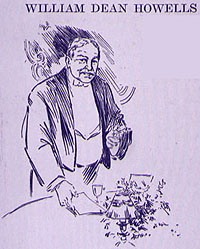

|
 WILLIAM DEAN HOWELLS said: These cheers, Mr. President, and ladies and gentlemen, are more terrifying to me than the dead silence of which I would gladly be a part. Since you have thought me fit, I could not wish a greater pleasure than that which you have proffered to me. I have written something prefatory to the toast I shall propose, and I wish before reading it to offer you what I believe ought to be a biographical explanation. Mr. Clemens has always had the effect on me of throwing me into a poetic ecstasy. (Laughter.) I know it is very uncommon. Most people speak of him in prose, and I dare say there will be a deal of prosing about him to-night; but for myself, I am obliged to resort to metre whenever I think of him. I fancy there is some strong undercurrent of poetry in the man which drags me down and sweeps me along with him. I remember three years ago, when he was a comparative youth of sixty-seven, I was called upon to respond to some sort of toast, and I instantly fell into rhyme. I don't know that I shall quite be able to scramble out of it to-night. At that time I praised him in what I ventured to call a double barreled sonnet; it was a sonnet of twenty-eight lines instead of fourteen. To-night, as he has the Psalmist's age limit, I thought perhaps a psalm would be more fitting; the psalm of David, if we could not get anything better. (Laughter.) But I found myself quite helpless when it came to the matter of preparation, and I fell back on the Shakespearean sonnet. I found myself, however, obliged to write a Shakespearean sonnet of extraordinary length. Shakespeare wrote sonnets of fourteen lines, mine is of twenty-eight. But you will find Shakespeare again has been improved upon since he died. Mr. Bernard Shaw now writes plays twice as good as Shakespeare, -- and I write sonnets twice of long as Shakespeare. (Laughter and applause.) I don't know that I need delay you longer from the pleasure before you, but such as my sonnet is I will read it. This is a sonnet to Mark Twain. A traveler from the Old World just escapedNow, ladies and gentlemen, and Colonel Harvey, I will try not to be greedy on your behalf in wishing the health of our honored and, in view of his great age, our revered guest. I will not say, "Oh King, live forever," but "Oh King, live as long as you like!" (Amid great applause and waving of napkins all rise and drink to Mark Twain.) |